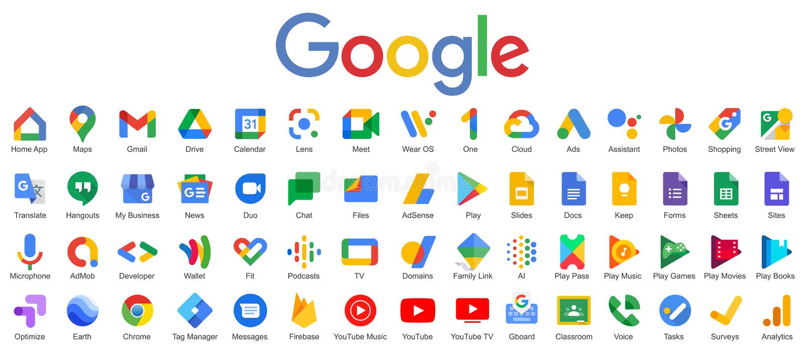

Despre Google
Google este o companie americană de tehnologie fondată în 1998 de către Larry Page și Sergey Brin, care au dezvoltat un motor de căutare inovator care a revoluționat felul în care oamenii accesează informațiile online. Astăzi, Google oferă o gamă largă de servicii și produse, printre care:
- Motoare de căutare
- Google Drive (serviciu de stocare în cloud)
- Gmail (serviciu de e-mail)
- Google Maps (serviciu de hărți și navigație)
- Google Chrome (browser web)

Produse Google
- Google Search
- Google Drive
- Gmail
- Google Maps
- Google Chrome
- Google Translate
- Google Photos
Istoricul Google
În 1998, Larry Page și Sergey Brin au creat motorul de căutare Google în garajul din Silicon Valley. În următorii ani, Google a crescut exponențial și a devenit lider în domeniul căutării online. În 2004, compania a efectuat o ofertă publică inițială de acțiuni și a devenit o corporație publică. Astăzi, Google este o filială a Alphabet Inc., o companie mamă care deține mai multe afaceri de tehnologie.